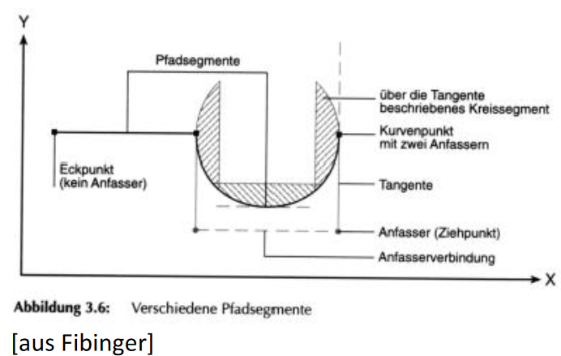
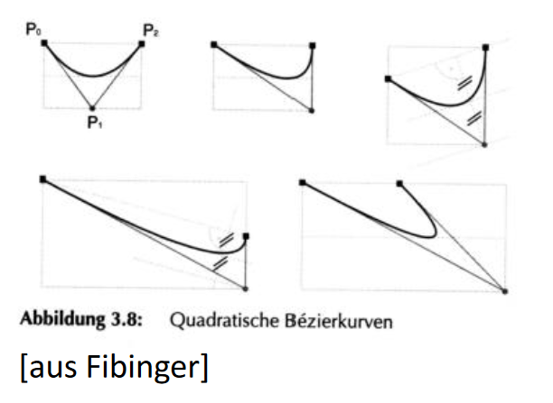

Einführung in die XML-Sprache Scalable Vector Graphics
MMWP2024 - LV11
Inhaltsverzeichnis
Inhaltsschwerpunkte
Einführung in SVGs
Pfade in SVG
Bézier-Kurven
Layertechnik
Voraussetzung
Der Ausgangspunkt dieser Vorlesungsreihe ist das Wissen über folgendes:
Grundlegendes mathematisches Verständnis für Vektorgrafiken
HTML5 Strukturelemente
Bilddatentypen
Ziele
Vorstellung von:
SVG-Datenbeschreibung
Vor und Nachteile von SVGs
Allgemeine SVG Elemente
Möglichkeiten und Funktionen von SVG
Scalable Vector Graphis
SVG ist ein XML-Standard des W3C, d.h. es ist strukturiertes Textformat
Ziel ist die Erstellung komplexer zweidimensionaler Vektorgrafiken in Webbrowsern (teils per Plug-in)
Single Sourcing: Text, Bild und Animation können aus einer Quelldatei kommen
Zusätzliche Features: Animation bzw. Interaktivität über CSS und Javascript
Entstehung - 1
Erste Konzepte entstanden im April 1998: Adobe, IBM, Netscape und Sun
reichten beim W3C eine Entwurf über die Precision Graphics Markup Language (PGML) ein
Angelehnt an PostScript
Im Mai 1998 reichten Hewlett Packard, Microsoft, Macromedia und Visio ihren
Vorschlag der Vector Markup Language (VML) beim W3C ein
Vorschlag von PRP (University of Plymouth, GB) und Orange PCSL
(Mobilfunkanbieter): Hyper Graphics Markup Language (HGML)
Zusammenfassung der Konzepte zu SVG erfolgte im Oktober 1998
Entstehung - 2
Die unterschiedlichen Vorschläge verfolgten verschiedene Ansätze zur Schaffung von Grafik-Elementen in Websites
Diese Vorschläge wiesen verschiedene Vor- und Nachteile auf, teils mangelte es ihnen an inbegriffenen Features und Anwendungsgebieten
Parallel gab es weiterhin Vorstöße zu Neuentwicklungen im Grafikbereich (z.B. DrawML, Quelle)
Entstehung - 3
Das W3C gründete die SVG Working Group, bestehend unter anderem aus:
Adobe, Apple, Autodesk, Canon, Corel, HP, IBM, Kodak, Macromedia, Microsoft,
Netscape/AOL, Quark, Sun, Xerox
SVG 1.0 wurde offiziell am 04.09.2001 zur Recommendation des W3C (rund 600
DIN-A4-Seiten): technische Angaben zum Aufbau von SVG, die DTD und DOM-Interfaces zu SVG
SVG 1.1 ist Recommendation seit 14.01.2003/ 2nd edition 16.08.2011
Das Element svg ist ein Gruppierungselement und enthält ganz allgemein den SVG-Inhalt eines SVG-Dokumentes oder -Fragmentes
In den tiny-Profilen gibt es exakt ein svg-Element in einem SVG-Dokument
Dies ist das Haupt- oder Wurzelelement (englisch: root) des Dokumentes im Sinne von XML
In der Vollversion von SVG 1.1 können darin weitere svg-Elemente ohne diese besondere Funktion eines Wurzelelementes auftreten, welche aber auch einen eigenen Anzeigebereich erhalten
Die Positionen von Punkten können in SVG absolut (d.h. bezogen auf den Nullvektor (0,0)) und relativ (d.h. bezogen auf ein zuvor benanntes Objekt) angegeben werden
Beide Positionsangaben sind in der Vektorgrafik möglich
Die Richtung des Pfades ist von Bedeutung bei Pfeilspitzen zu einem Knoten des
Pfades, bei Linienmustern von einem Knoten weg, und bei Pfaden mit „Fehlstücken“
bzw. sich überlappenden Flächen
SVG-Pfadbeschreibung - 3
Zwei Punkte sind über unendlich viele Pfade miteinander verbindbar, der kürzeste ist in 2D die gerade Linie
Beispiel:
Man verbinde drei Punkte, die ersten zwei mit einer Strecke, den zweiten mit dem dritten mit einer (nicht-geraden) Kurve
SVG-Pfadbeschreibung - 4
Warnung: Die Zeichnung zeigt die Formatierungen der Vektorgrafik!
Dadurch kommt die XML-typische Trennung von Struktur und Formatierung zum Ausdruck
Die Pfade sind das mathematisch ausgedrückte Grundgerüst, das mit sichtbaren Eigenschaften wie Farbe, Linienstärke etc. belegt wird
Für die Beschreibung der Kurve wurden zwei weitere Punkte angefügt: die sogenannten Kontroll- oder Anfasserpunkte
Sie bilden eine Tangente zu einem am Beginn und am Ende der Kurve gedachten Kreissegment gleicher lokaler Krümmung ("Schmiegekurve")
SVG-Pfadbeschreibung - 5
Eine dritte Tangente wird dadurch beschrieben, dass die beiden (in die gleiche Richtung wegwärts von der Kurve) zeigenden Anfasserpunkte verbunden werden
Die Neigung dieser dritten Tangente entspricht der Neigung der Tangente am zur Verbindung nächsten Punkt der Kurve (Parallelverschiebung erforderlich)
In den anderen Fällen schneidet die Verbindungslinie die Kurve, ohne Bezug zu ihr
SVG-Pfadbeschreibung - 6

Bézier-Kurven
Bézier-Kurven sind spezielle Verbindungslinien zwischen zwei Punkten, die als Vektorgleichung für die Menge ihrer Punkte beschrieben werden
In SVG werden (wie üblich) quadratische und kubische Bézier-Kurven unterstützt und genutzt
Grob gesagt, haben quadratische Bézier-Kurven einen Anfasserpunkt, und kubische Bézier-Kurven zwei Anfasserpunkte
Bézier-Kurven - Historie
Sie wurde Anfang der 1960er Jahre unabhängig voneinander von Pièrre Etienne
Bézier bei Renault und Paul de Faget de Casteljau bei Citroën für Computer-Aided
Design (computerunterstützte Konstruktion) entwickelt
Paul de Casteljau gelang zwar die Entdeckung früher, Citroën hielt seine
Forschungen jedoch bis zum Ende der 1960er Jahre als Betriebsgeheimnis zurück
Bézier-Kurven - kubisch - 1
Die Funktionen für kubische Bézier-Kurven in der Form einer einparametrigen Vektorgleichung lauten:
P(t) = P0(1-t)3 + 3·P1(1-t)2t + 3·P2(1-t)t2 + P3t3 , t in [0, 1]
Damit wird eine Kurve zwischen den mit den Vektoren P0 und P3 bezeichneten Punkten beschrieben
Die zwei Anfasserpunkte werden durch die Vektoren P1 und P2 bezeichnet
<!-- <?xml version="1.0"?>
<!DOCTYPE svg PUBLIC "-//W3C//DTD SVG 1.0//EN" "http://www.w3.org/TR/2001/REC-SVG-
20010904/DTD/svg10.dtd"> -->
<!-- -->
<svg width="400" height="300" xmlns="http://www.w3.org/2000/svg">
<path d="M100,200 C100,100 400,100 400,200" stroke="black"/>
</svg>
Dabei wird mit „moveTo“, d.h. „M“, der Anfangspunkt vorgegeben, der „curveTo“-
Befehl „C“ besteht aus zwei Anfasserpunkten und dem Endpunkt. Die Kurve wird
nicht geschlossen.
Bézier-Kurven - Quadratisch - 1
Die Funktion für quadratischen Bézier-Kurven lautet:
P(t) = P0(1-t)2 + 2·P1(1-t)t + P2t2 , t in [0, 1]
Die Vektoren P0 und P2
beschreiben die zu verbindenden Punkte,
P1 beschreibt den Anfasserpunkt
Bézier-Kurven - Quadratisch - 2

Bézier-Kurven - SVG Kubisch
<!-- <?xml version="1.0"?>
<!DOCTYPE svg PUBLIC "-//W3C//DTD SVG 1.0//EN" "http://www.w3.org/TR/2001/REC-SVG-
20010904/DTD/svg10.dtd"> -->
<!-- -->
<svg width="400" height="300" xmlns="http://www.w3.org/2000/svg">
<path d="M100,200 Q100,250 400,200" stroke="black"/>
</svg>
Dabei wird mit „moveTo“, d.h. „M“, der Anfangspunkt vorgegeben, der „quadratic
Bézier CurveTo“-Befehl „Q“ besteht aus einem Anfasserpunkt und dem Endpunkt.
Die Kurve wird nicht geschlossen
Iris Fibinger, „SVG – Scalable Vector Graphics. Praxiswegweiser und Referenz für den neuen
Vektorgrafikstandard.“, Markt+Technik Verlag, München, 2002: www.svg-site.de